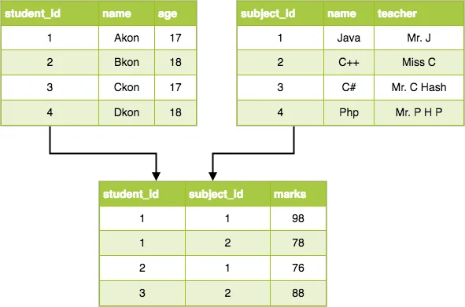
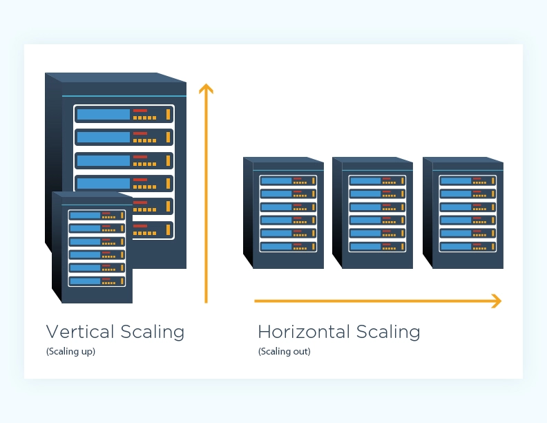

Introduction to databases
MongoDB
What is the course about
- What is Database
-
MongoDB Basics
- Installation and launch
- Queries
- Aggregations
- Indexing
- Replication\Sharding
- Designing data models
- MongoDB Compass
- Working with backups
- Working with MongoDB in Python\JavaScript
Organizational issues
Why do we need databases 🤔
Why do we need databases 🤔
- Databases can store very large numbers of records efficiently (they take up little space).
- Easy to perform CRUD operations (create, read, update, delete)
- Fast and efficient searching
- Accurate
- Data integrity
- Multi-access
- Replication
- Security
What is database
A program that allows you to store and process information in a structured way.
Database types
Relational DBMS vs non-relational
SQL vs NoSQL
SQL
- Stands for Structured Query Language
- Lets you access and manipulate databases
- Lets you perform CRUD operations
- Although SQL is an ANSI/ISO standard, there are different versions of the SQL language.
SELECT CustomerName, City FROM Customers;
UPDATE Customers
SET ContactName = 'Alfred Schmidt', City= 'Frankfurt'
WHERE CustomerID = 1;
How is data organized with SQL
NoSQL
- Stands for "non SQL" or "not only SQL"
- NoSQL databases emerged in the late 2000s (while SQL was developed in the early 70s)
- Term "NoSQL" typically refers to any non-relational database
Why NoSQL appeared
- More users are going online
- Meeting UX requirements with consistent high performance
- 24/7 availability
- Access from anywhere in the world
- Reducing the cost of storage
- Big data is getting bigger
- Applications are moving to the cloud
- The world has gone mobile
- Propagation of agile methodology
Relational vs non-relational DBMS
| Relational | Non-relational | |
|---|---|---|
| Data storage model | Tables | Documents, key-value, column, graph |
| Schemas | Rigid | Flexible |
| Scaling | Vertical (scale-up with a larger server) | Horizontal (scale-out across commodity servers) |
| ACID Transactions | Supported | Most do not support multi-record ACID transactions |
| Joins | Typically required | Typically not required |
Source: https://www.mongodb.com/nosql-explained/nosql-vs-sql
Reasons to use SQL database
- Your data is structured and unchanging
- You want to ensure ACID compliance
Reasons to use a NoSQL database
- To store large volumes of data that might have little to no structure
- To speed development
- To boost horizontal scalability
Relational DBMS examples


Non-relational DBMS examples
Redis
- Remote Dictionary Server
- key-value
- strings, hashes, lists, sets, sorted sets with range queries, bitmaps, and so on..
- caching, message queue, counters, ML, and so on
Neo4j
- graph
- Recommendation engine, social media and social network graphs, fraud detection, ...
InfluxDB
- time-sires
- IoT, analytics, monitoring, ...

MongoDB features
- Document-oriented
- High performance
- Schema-less
- Aggregations
- Horizontal scaling
- High availability
- GridFS
- BSON (Binary JavaScript Object Notation)
What is document-oriented
A document-oriented database is a specific kind of database that works on the principle of dealing with 'documents’ rather than strictly defined tables of information.
Scalability
How many requests can we process
How quickly can we adapt to the (high)load
Vertical scaling vs horizontal
MongoDB replication
A replica set in MongoDB is a group of mongod processes that maintain the same data set.


Why we will use MongoDB
- MongoDB can cover almost all RDBMS cases
- Easy to use and develop
- BigData-ready
- Aggregations
MongoDB disadvantages and limitation
- Not the best solution for applications with complex transactions (limited transaction support)
- Usually requires more disk space
- By design, joined collections tend to be much slower than in relational DB
- Being schema-less can sometimes lead to bad data modeling designs.